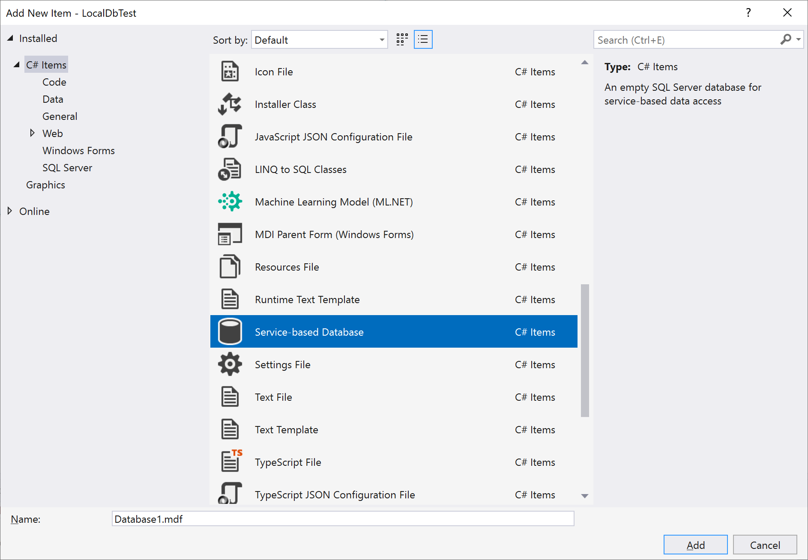
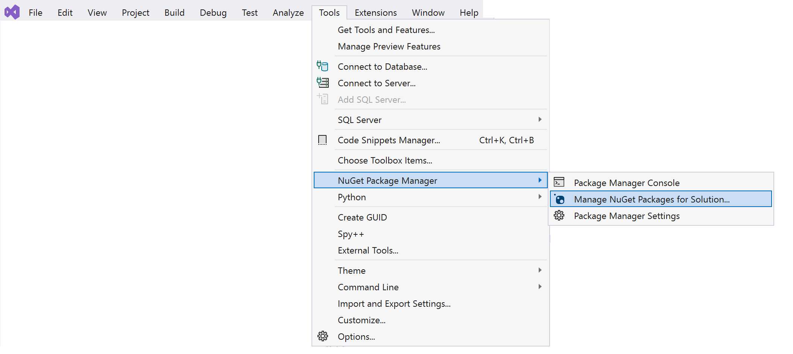
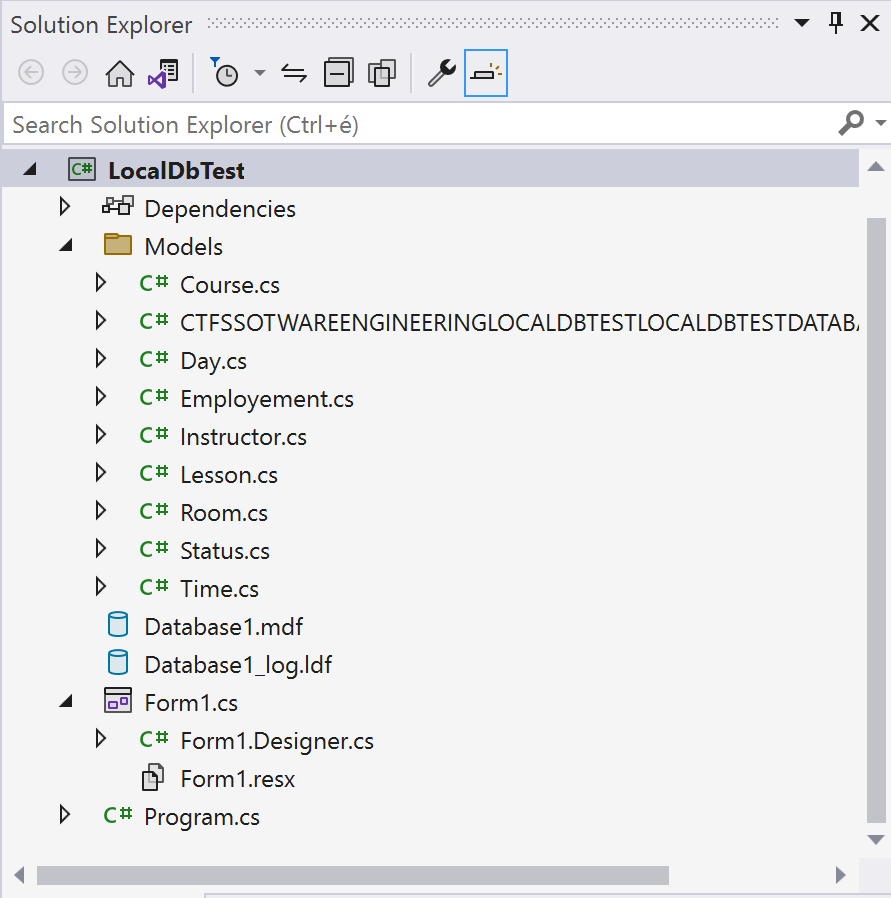

Lokális adatbázis használata
A feladat célja
A fejlesztés korai fázisában, vagy egy kísérleti projektnél körülményes lehet adatbázis-szerveren kialakítani a tesztadatbázist. EFCore alatt lehetőség van lokális fájlrendszerben tárolt .mdf kiterjesztésű adatbázis fájlt használni, mely később elhelyezhető adatbázis szerveren. A lokális adatbázis egyértelmű hátránya, hogy nem tudja egyszerre több felhasználó elérni az adatokat, de erre fejlesztés közben valószínűleg nincs is szükség. Viszont nincs szükség internet elérésre és/vagy szerver üzemeltetésére. Lokális adatbázis használata production, azaz éles környezetben nem javasolt, fejlesztéshez és prototípus készítéshez viszont kiváló eszköz.
Ebben a feladatsorban:
Létrehozunk egy új, Windows Froms App-ot .NET 6 alá
A porjektben létrehozunk egy adatbázis állományt
Az adatbázisban SQL script futtatásával kialakítjuk az adatbázis sémát, melyet feltöltünk adatokkal
Telepítjük az EntityFrameworkCore használatához szükséges csomagokat NuGet segítségével
A feladatsor nagyon hasonlít az előző, [A távoli adatbázis elérése](A távoli adatbázis elérése) című feladatsorhoz, így egyben gyakorló feladatként is szolgál.
1. Windows Forms App létrehozása .NET 6 alatt
(+/-) Hozz létre egy Windows Forms App típusú alkalmazást Visual Studio-ban. A Solution és a Project neve tetszőleges, a példában a LocalDbTest nevet használjuk.

Vigyázz: Windows Forms App (.NET Framework) template a régi .NET Framework 4.7 vagy 4.8 keretrendszert használja, nem a .NET 6.0-át! Ne keverd össze! Ha jól csináltad ez látszik:

2. Lokális adatbázis létrehozásának lépései egy Visual Studio projektben
2.1 Adatbázis állomány létrehozása
(+/-) Adj egy Service based database objektumot a projekthez, az objektum neve lesz az adatbázis neve! (A képen látható ablak a Solution Explorer-ben jobb egérgombra megjelenő menüben az Add new item menüpontra kattintva jelenik meg.)

Ez két új fájlt fog létrehozni a Solution Explorerben:
- A .mdf kiterjesztésű maga az adatbázis
- Az .ldf kiterjesztésű az adatbázishoz kapcsolódó log fájl. (Ez utóbbit büntetlenül lehet törölni is, legfeljebb újra létrejön.)

2.2 Csatlakozás Server Explorer-ben az új adatbázishoz
Figyelem: A Server Explorer-nek semmi köze nincs az épp megnyitott projekthez. A Visual Studio egy integrált fejlesztőkörnyezet, és mint ilyen rendelkezik beépített funkcióval alapvető adatbázis műveletek elvégzésére. A fejlesztőnek így nem kell elhagyni a VS-t, és más alkalmazást telepíteni, ha egyszerű adatbázis műveleteket szeretne végrehajtani. A Server Explorer ablakban akkor is csatlakozhatunk adatbázishoz, ha a Visual Studio-ban éppen nincsen projekt megnyitva.
A Server Explorer-be legegyszerűbben úgy tudod felvenni az új kapcsolatot, ha kettőt kattintasz az
.mdfállományra a Solution Explorer-ben.Ha ez valami miatt nem működik, a Server Explorer
Connect To Databeseikonjával is fel lehet venni az új adatbáziskapcsoaltot.
Tipp: Ha nincs kedved kitallózni a fájlrendszerben az adatbázis elérési útját, a Solution Explorer-ben kattints az .mdf állományra, és a Properties ablakból másold vágólapra az elérési utat.

Az OK gomb után ilyesminek kéne megjelennie a Server Explorer-ben:

2.3 Adatbázis séma létrehozása, adatok feltöltése
A következő lépésben Server Explorer segítségével felépítünk egy többtáblás adatbázist az előbb létrehozott .mdf adatbázis állományban. Kattintgatás helyett most egyenlőre legenerált SQL scriptet fogunk használni, mely létrehozza a táblákat, majd INSERT INTO-k segítségével feltölti őket adatokkal.
(+/- ) Töltsd le a Studies_CREATE_FILL.sql állományt, és nyisd meg Notepad-ben, vagy Notepad++-ban.
(+/- ) Mielőtt vágólapra másolt a fájl teljes tartalmát, érdemes megnézni hogy épül fel.
(+/- ) A Server Explorer-ben kattints jobb gombbal az adatbázisra, majd a New query menüpont kiválasztása után megjelenő ablakba másold be az SQL scriptet.
(+/- ) Futtasd az SQL szkriptet az SQL szerkesztő toolbar-ján lévő kis üres zöld háromszög lenyomásával. (Ezt könnyű összekeverni a projekt futtatására szolgáló teli zöld háromszöggel...)
(+/- ) Ha minden sikerült, és kinyitod a Tables csoportot, megjelennek az adatbázis táblák, és a kiválasztott táblára jobb egérrel kattintva a Show Table Data menüponttal megtekintheted a tábla adatait.

2.4 Connection String kinyerése
Mint ahogy arról már korábban esett szó, a Server Explorer-nek semmi köze nincs az éppen megnyitott projekthez. Eddig arra használtuk, hogy a projektben lévő .mdf adatbázis állományban felépítjük az adatbázist. Ahhoz hogy olyan C# programot tudjunk írni, szükségünk lesz az úgynevezett connection string-re.
A connection string-ben mező--érték párokat találunk, ez az információ szükséges egy adatbázisba bejelentkezéshez, és egy meghatározott adatbázis eléréséhez. A következő lépésben erre a connection string-re lesz szükségünk ahhoz, hogy legeneráljuk az adatbázis eléréséhez szükséges C# osztályokat.
Ha a Server Explorer-ben az adatbázisra kattintasz, a Properties ablakban megjelenik a connection string. Attól függően hogy a fájlrendszerben hol hoztad létre a Solution-t, valami ilyesmi:
Data Source=(LocalDB)\MSSQLLocalDB;AttachDbFilename=C:\TFS\SotwareEngineering\LocalDbTest\LocalDbTest\Database1.mdf;Integrated Security=True;Connect Timeout=30
(+/-) Jegyezd meg, hogy hol találod a connection string-et később kelleni fog!
3. Reverse engineering
A Microsoft-os terminológiában Revrese Engineering-nek hívjuk azt a folyamatot, ami egy meglévő adatbázis séma alapján legenerálja azokat az osztályokat, amelyek leképezik az adatbázist táblákat, a köztük lévő kapcsolatokat, illetve lehetőséget biztosítanak adatok mozgatására a kliens és a szerver között.
3.1 NuGet csomagok hozzáadása a projekthez
(+/-) Nyisdmeg a NuGet csomagkezelőt, és add az alábbi csomagokat a projekthez:

A Microsoft.EntityFrameworkCore.Tools és a Microsoft.EntityFrameworkCore.SqlServer a NuGet konzolán keresztül ezzel a két paranccsal is hozzáadható a projekthez:
Install-Package Microsoft.EntityFrameworkCore.SqlServer
Install-Package Microsoft.EntityFrameworkCore.Tools
Osztályok generálása
Sajnos .NET Core alatt nem áll rendelkezésre grafikus eszköz és varázsló az adatbázis sémája alapját leképező C# osztályok előállítására. Ezt is a Package Manager Console-ból kell megoldani parancssorból, de nem olyan veszélyes, mint első hallásra tűnik. (Tools/NuGet Package Manager)
A Scaffold-DbContext parancs használata egyszerű, meg kell neki adni a Connection String-et, és a projekten belül azt a mappát, ahova dolgozhat. A mappa neve tipikusan a Models, ha csak egy adatbázisunk van.
Scaffold-DbContext "[Connection String]" Microsoft.EntityFrameworkCore.SqlServer -OutputDir [Mappa]
Az adatbázis elérési útja valószínűleg eltér az alábbi példától:
Scaffold-DbContext "Data Source=(LocalDB)\MSSQLLocalDB;AttachDbFilename=C:\TFS\SotwareEngineering\LocalDbTest\LocalDbTest\Database1.mdf;Integrated Security=True;Connect Timeout=30" Microsoft.EntityFrameworkCore.SqlServer -OutputDir Models
Fontos: ha a projektet nem lehet lefordítani, amikor kiadjuk a
Scaffold-DbContextparancsot, csak egy mérsékelten beszédes "Bulid Failed." üzenetet kapunk. Ha nem ez a baj, használható a parancs végére a-Verbosekapcsoló.
(+/-) Állítsd össze a Scaffold-DbContext parancsot saját connection string-ed alapján, majd futtasd a Package Manager Console-ban.
Ezután meglelenik a SolutionExplorer-ben egy Models mappa benne a fájlokkal:

Érdemes megfigyelni az egyik osztály neve céltalanul borzasztó -- a feladatsor összeállításakor CTFSSOTWAREENGINEERINGLOCALDBTESTLOCALDBTESTDATABASE1MDFContext.cs lett. Az osztály nevet az a bázis elérési útjából képezte Scaffold-DbContext.
A
-Contextkapcsoló segítségével megadhatjuk az adatbázis eléréséhez szükséges osztály nevét. Microsoft által javasolt elnevezési konvenció szerint az osztály neve az adatbázis nevéből és aContextszóból áll össze. Esetünkben például-Context Database1Context.Ha az
-OutputDirkapcsoló után megadott mappában már ott vannak a fájlok, a-fkapcsolóval lehet rávenniScaffold-DbContext-et a már meglévő fájlok felülírására.
A fentiek alapján a parancs a következőképp alakul:
Scaffold-DbContext "Data Source=(LocalDB)\MSSQLLocalDB;AttachDbFilename=C:\TFS\SotwareEngineering\LocalDbTest\LocalDbTest\Database1.mdf;Integrated Security=True;Connect Timeout=30" Microsoft.EntityFrameworkCore.SqlServer -OutputDir Models -Context Database1Context -f
- Amíg nem hivatkozunk rá a
CTFSSOTWAREENGINEERINGLOCALDBTESTLOCALDBTESTDATABASE1MDFContext.csbüntetlenül törölhető a projektből.
Érdemes megnézni egy osztályt, példáil az Instructor.cs-t -- az SQL szerveren lévő Question tábla leképezését tartalmazza:
using System;
using System.Collections.Generic;
namespace LocalDbTest.Models
{
public partial class Instructor
{
public Instructor()
{
Lessons = new HashSet<Lesson>();
}
public int InstructorSk { get; set; }
public string? Salutation { get; set; }
public string Name { get; set; } = null!;
public byte? StatusFk { get; set; }
public string? EmployementFk { get; set; }
public virtual Employement? EmployementFkNavigation { get; set; }
public virtual Status? StatusFkNavigation { get; set; }
public virtual ICollection<Lesson> Lessons { get; set; }
}
}
4. Forms alapú felhasználói felület készítése
A továbbiakban csak az elvégzendő feladat fog szerepelni ellenőrző listaként az előző feladatsorban elvégzett lépésekről. Ha elakadsz, ott találsz majd segítséget.
4.1 Elvégzendő feladatok
(+/-) Hozz létre egy DataGridView-t, az ablak átméretezésével a DataGridView is nőjön/csökkenjen
(+/-) Hozz létre egy adatbáziskontextust (Database1Context) és kösd hozzá a DataGridView-hoz
(+/-) Hozz létre egy mentés gombot, a kattintás eseménykezelőjében mentsed el a Database1Context változásait (ügyelj a hibakezelésre)
(+/-) Hozz létre egy BindingSource-t és állítsd be a DataGridView adatforrásának
+ Bónusz az érdeklődőknek
Eddig csak az egyik tábla adatait tudtuk megjeleníteni a DataGridView-ban, de egy ListBox és néhány sor kód segítségével át tudjuk állítani a DataGridView adatforrását.
(+/-) Hozz létre egy string listát és pakold bele a táblák neveit
List<string> tableNames = new List<string> {"Courses","Days","Employements","Instructors","Lessons","Rooms","Statuses","Times"};
(+/-) Hozz létre egy ListBox-ot és tedd a mentés gomb alá
(+/-) A Form1 konstruktorában rendeld hozzá a táblanevek listát ListBox adatforrásához
listBox1.DataSource = tableNames;
(+/-) Ha van BindingSource beállítva a DataGridView adatforrásának, akkor töröld ki a BindingSource-t a Form1.cs [Design]-ból és írd vissza az eredeti sorodat
Models.Database1Context context = new(); //Érdekesség: ha üres konstruktorral hozol létre egy objektumot lehet rövidebben írni úgy, hogy egyszerűen csak annyit mondunk, hogy =new();
List<string> tableNames = new List<string> {"Courses","Days","Employements","Instructors","Lessons","Rooms","Statuses","Times"};
public Form1()
{
InitializeComponent();
dataGridView1.DataSource = context.Courses.ToList();
listBox1.DataSource = tableNames;
}
(+/-) Hozz létre egy eseménykezelőt a ListBox-hoz
(+/-) Nyerd ki a sender-ből a kiválasztott elemet
private void listBox1_SelectedIndexChanged(object sender, EventArgs e)
{
string selectedTable = (sender as ListBox).SelectedItem.ToString();
//Castoljuk a sender objektumot ListBox-á, hogy legyen SelectedItem tulajdonsága
}
Egy switch statement-tel végig lehet menni minden egyes lehetőségen és attól függően be lehet állítani az új adatforrást
private void listBox1_SelectedIndexChanged(object sender, EventArgs e)
{
string selectedTable = (sender as ListBox).SelectedItem.ToString();
switch (selectedTable)
{
case "Courses":
dataGridView1.DataSource = context.Courses.ToList();
break;
case "Days":
dataGridView1.DataSource = context.Days.ToList();
break;
case "Employements":
dataGridView1.DataSource = context.Employements.ToList();
break;
case "Instructors":
dataGridView1.DataSource = context.Instructors.ToList();
break;
//...
//...
//...
default:
break;
}
}
}
De ennél van egy sokkal elegánsabb megoldás: A C#-ban lehet módosítani és elérni objektumok tulajdonságát úgy, hogy a tulajdonság nevét egy változóban tároljuk. Ezt a reflekciónak köszönhetjük, ami lehetővé teszi az osztály struktúrájának kifejezését kóddal.
using system.Reflection;
//...
private void listBox1_SelectedIndexChanged(object sender, EventArgs e)
{
string selectedTable = (sender as ListBox).SelectedItem.ToString(); //listBox1 kiválasztott eleme
Type type = context.GetType(); //a type változóban eltároljuk azt, hogy a context (Models.Database1Context) milyen típusú - itt Models.Database1Context lesz a típus
PropertyInfo propertyInfo = type.GetProperty(selectedTable); //a propertyInfo-ban eltároljuk a tulajdonságot úgy, mint ahogy az előbb az eltároltuk osztály típusát a type-ban
object value = propertyInfo.GetValue(context); //az eltárolt tulajdonság kivonatán meghívjuk a GetValue-t, ami egy létező példányt kér egy olyan objektumból, aminek van a tulajdonsága a propertyInfo által reprezentált tulajdonság és ez visszaadja a context.Courses-t, a context.Instuctors-t attól függően, hogy mi van a selectedTable-ben
dataGridView1.DataSource = (value as IEnumerable<object>).ToList(); //végül pedig beállítjuk az új adatforrást, de ahhoz, hogy listává tudjuk alakítani először biztosítanunk kell róla a C#-ot, hogy ez az objektum (ami most a value) az listává alakítható. Mivel tudjuk, hogy a context.Courses ... mind átalakítható, így itt nem lesz gond. Ha rámegyünk az egérrel a .ToList()-re, akkor azt látjuk, hogy egy IEnumerable<bármi> kell neki, így mi adunk neki egy IEnumerable<object>-et, mert a value egy object.
}
Ez az "elegáns" megoldás egy sorban:
private void listBox1_SelectedIndexChanged(object sender, EventArgs e)
{
dataGridView1.DataSource = (context.GetType().GetProperty((sender as ListBox).SelectedItem.ToString()).GetValue(context) as IEnumerable<object>).ToList();
}
(+/-) Valósítsd meg az egyik módszert és próbáld ki, hogy működik-e